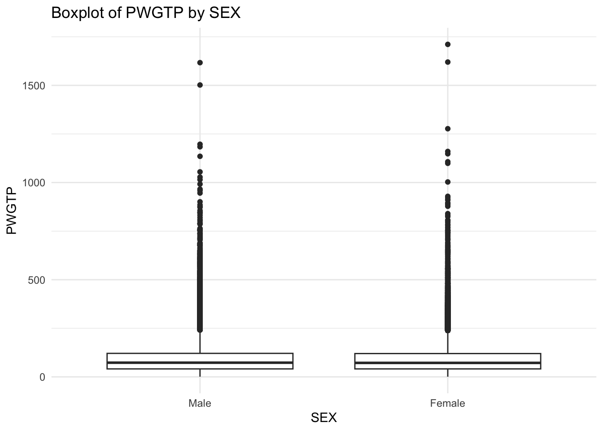
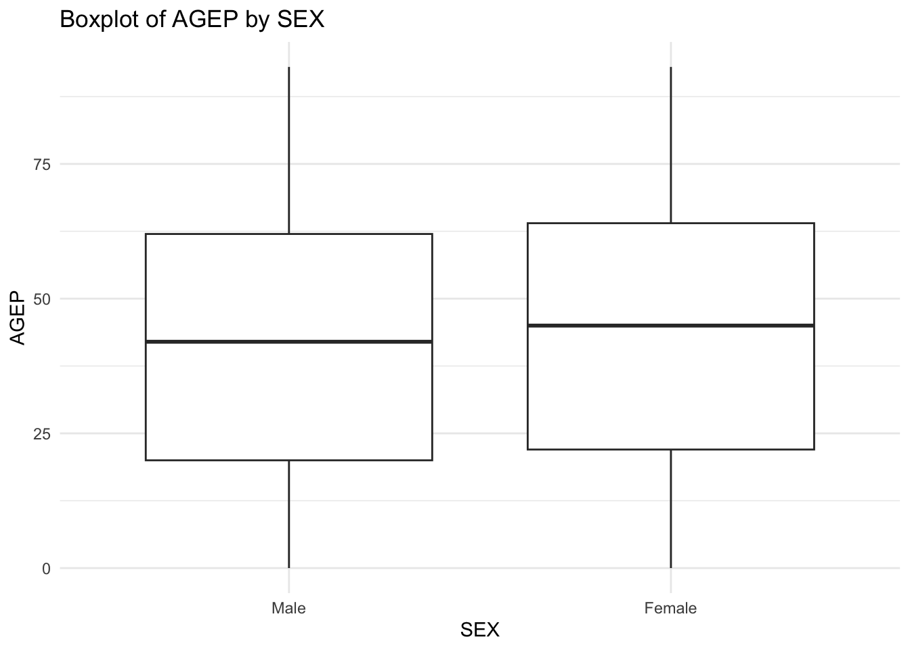
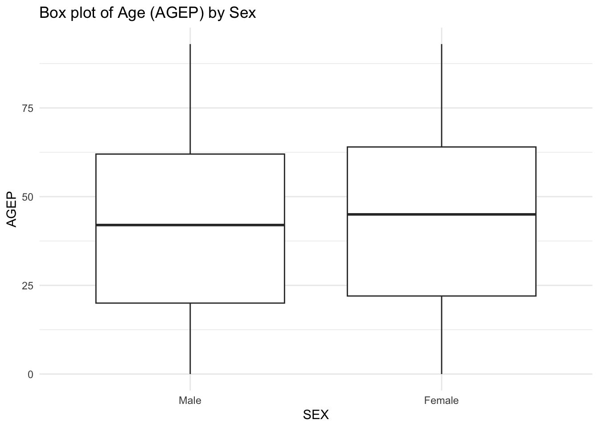
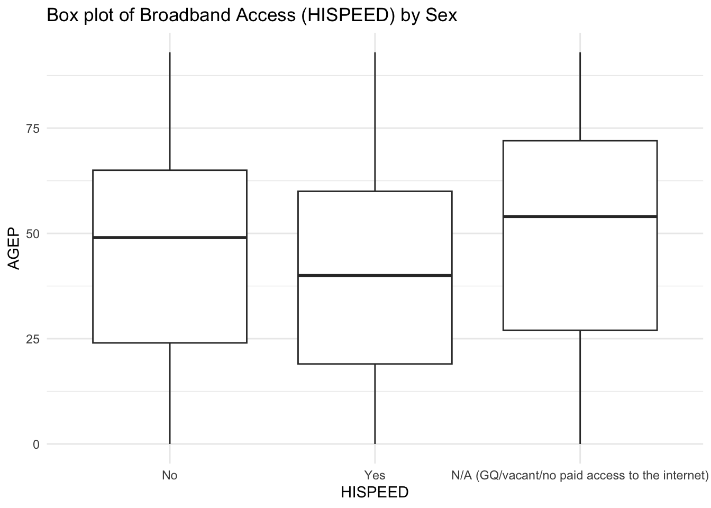
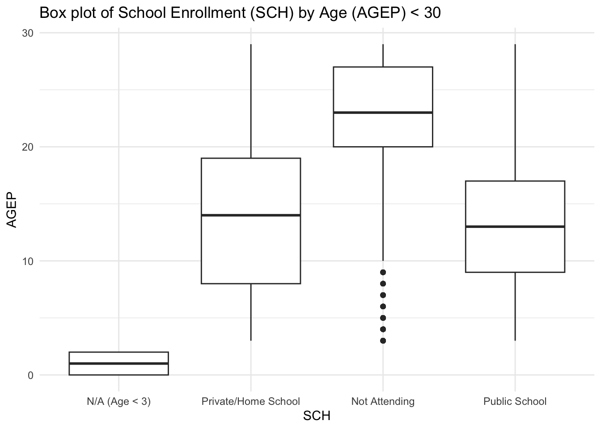
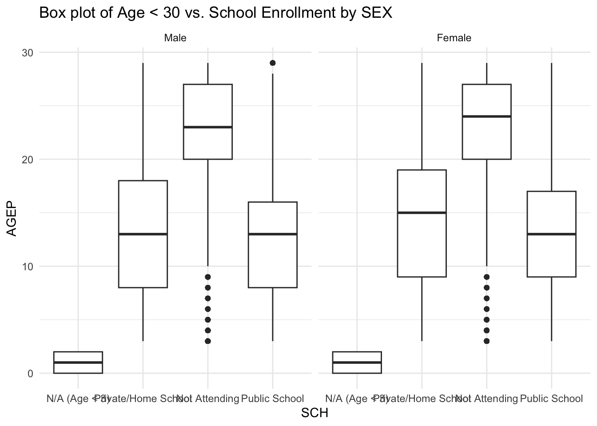

#return API query as tibble
return_tibble <- function (content)
{
parsed_data <- as_tibble(fromJSON(rawToChar(content)))
#set column names from first row
col_names <- parsed_data[1,]
parsed_data <- parsed_data[-1,]
parsed_data <- setNames(parsed_data, col_names)
#save data to disk
# write_csv(parsed_data, "raw_api.csv")
return(parsed_data)
}Project 1
Project 1
Introduction
The purpose of Project One is to query, summarize, and display data using the census.gov API
Workflow
The main workflow consists of
- Calling a function to get data from the API
- Checking the returned data meet criteria defined in the project specification
- Getting metadata for specified variables
- Mapping classification levels for factor variables
- Mapping time variables to the midpoint for times that have ranges and formatting in 24hour time format
- Returning a tibble of the API
- Calling a function that allows the user to specify multiple years of survey data when querying the API and returns results as a tibble
- Making our previous tibble have an additional class of “census”
- Calling a function that produces means and standard deviations for numeric variable(s) and counts for categorical variable(s) in a named list
- Create boxplot of selected variables:
- Box plot of Age (AGEP) by Sex
- Box plot of Broadband Access (HISPEED) by Sex
- Box plot of School Enrollment (SCH) by Age (AGEP) < 30
- Box plot of Age < 30 vs. School Enrollment by SEX
Implementation
Data Processing: Workflow Steps 1—6
We created a few helper functions to ensure separation of concerns and modularity of code. The implementation of these functions is detailed below
Function: return_tibble
- returns data from an API call to census.gov as a tibble
Function: get_var_metadata
- dynamically gets variable metadata and returns a lookup table for specified variables in function
get_PUMS - this function is currently of limited utility, but works for the current project.
- the original idea was to create a metadata table from the project specification that could be used to lookup and drive the logic for data processing.
- It needs work to be part of a consistent metadata driven approach, but works minimally for this project
#get metadata from specification for user provided variables
#metadata can be used for further checks, type conversion, and factor leveling
#get_var_metadata currently checks for required variables in a user provided
#function call, but no other checks
get_var_metadata <- function(var_list){
spec_vars <- tibble(varname = c("PWGTP","AGEP","GASP","GRPIP","JWAP","JWDP",
"JWMNP","FER","HHL","HISPEED","JWTRNS","SCH",
"SCHL","SEX"),
type = c("num","num","num","num","chr","chr","num","chr"
,"chr","chr","chr","chr","chr","chr"),
required = c(TRUE,TRUE,TRUE,TRUE,TRUE,TRUE,TRUE,TRUE,
TRUE,TRUE,TRUE,TRUE,TRUE,TRUE),
dt = c(FALSE,FALSE,FALSE,FALSE,TRUE,TRUE,TRUE,FALSE,FALSE,FALSE,
FALSE,FALSE,FALSE,FALSE)
)
#unlist user specified / API required vars to vector
if (!"PWGTP" %in% var_list){
var_list <- c(var_list, "PWGTP")
}
var_list <- unlist(str_split(var_list, ","))
var_list <- str_trim(var_list)
var_list <- var_list[var_list != "" & var_list != " "]
#return required varnames as a vector to use in quality checks
user_vars <- spec_vars |>
filter(varname %in% var_list)
#return tibble for varnames in user provided list. This is the lookup table to
#be used for checking variable types and factor levels
return(user_vars)
}Function: check_vars
- checks
geographyandyearagainst specified values
check_vars <- function(user_vars, geography, year)
{
year_range <- seq(2010,2022, by = 1)
if (!geography %in% c("all","region","division","state")){
stop(paste(geography), " is not an allowed value for the geography variable. Options are: all, region, division, state")
}
if (!year %in% year_range){
stop(paste(year), " is not an allowed value for the year variable. Options are between 2010 - 2022")
}
else if (year == 2020){
stop(paste(year), " is not available from census.gov")
}
else{
return(TRUE)
}
}Function: get_pums_factor_levels and set_factor_levels_types
- getter function gets factor levels and returns them as a list. Initial designs included this, but are not referenced in subsequent data processing steps. Kept as part of project for posterity
- setter function checks, processes, and sets classification levels for factor variables.
- returns a tibble
#get factor levels
get_pums_factor_levels <- function(var_names){
print(var_names)
#initialize list
levels_list <- list()
var_names <- unlist(strsplit(var_names,","))
print(var_names)
#get base URL
for (var_name in var_names){
url <- paste0("https://api.census.gov/data/2022/acs/acs1/pums/variables/",var_name,".json")
print(url)
response <- GET(url)
if (status_code(response) == 200) {
data <- fromJSON(content(response,"text"))
levels <- data$values$item
levels_list[[var_name]] <- levels
}
}
return(levels_list)
}
#get factor levels and set types
set_factor_levels_types <- function(data_tibble, var_tibbs) {
# Process character variables and set them as factors with levels
chr_vars <- var_tibbs|>
filter(type == "chr") |>
pull(varname)
# Loop through chr_vars and fetch levels for factor variables
data_tibble <- data_tibble |>
mutate(across(all_of(chr_vars), ~ {
var_name <- cur_column() # Get the current column name
url <- paste0("https://api.census.gov/data/2022/acs/acs1/pums/variables/", var_name, ".json")
response <- GET(url)
if (status_code(response) == 200) {
data <- fromJSON(content(response, "text", encoding = "UTF-8"))
if (!is.null(data$values) && "item" %in% names(data$values)) {
levels <- names(data$values$item)
labels <- data$values$item
return(factor(.x, levels = levels, labels = labels))
} else {
warning(paste("Levels for", var_name, "not found in API response"))
return(.x) # Return unchanged column
}
} else {
warning(paste("Failed to fetch data for", var_name, ": HTTP status", status_code(response)))
return(.x) # Return unchanged column
}
}))
# Process numeric variables and convert them to numeric
num_vars <- var_tibbs |>
filter(type == "num") |>
pull(varname)
data_tibble <- data_tibble |>
mutate(across(all_of(num_vars), as.numeric))
return(data_tibble)
}
#Checks
# x <- get_pums_factor_levels("JWMNP")
# devdata_tibbs <- pums_data$api_data
# glimpse(devdata_tibbs)
# devvar_tibbs <- pums_data$api_metadata
# glimpse(devvar_tibbs)
# devx <- set_factor_levels_types(devdata_tibbs, devvar_tibbs)
# print(unique(devx$JWAP))
# print(unique(devx$SEX))
# print(unique(devx$FER))Function: extract_times, convert_to_24hr, calculate_midpoint
- these functions are dependent on one another. They convert factored time variables that contain a specific string pattern into a 24 hour time format representing the midpoint of the range
- Example: the factored string
3:00 p.m. to 3:04 p.m.would be returned from this function as15:02
- Example: the factored string
extract_times <- function(jwap_value){
# Handle N/A and missing cases
if (str_detect(as.character(jwap_value), "N/A") |
is.na(jwap_value) |
str_detect(as.character(jwap_value), "NA")) {
return(list(first_24 = "NA", second_24 = "NA"))
}
# Split the string into parts (e.g., "9:40 p.m. to 9:44 p.m.")
parts <- str_split(as.character(jwap_value), " ")[[1]]
first_time <- parts[1]
first_ampm <- str_replace_all(parts[2], "\\.", "")
second_time <- parts[4]
second_ampm <- str_replace_all(parts[5], "\\.", "")
# Convert both times to 24-hour format
first_24 <- convert_to_24_hour(first_time, first_ampm)
second_24 <- convert_to_24_hour(second_time, second_ampm)
return(list(first_24 = first_24, second_24 = second_24))
}
convert_to_24_hour <- function(time_str, ampm_str) {
# Clean up the AM/PM string by removing periods
full_time_str <- paste(time_str, ampm_str) # Combine time and cleaned AM/PM
time_parsed <- parse_date_time(full_time_str, "I:M p") # Parse AM/PM time
return(format(time_parsed, "%H:%M")) # Convert to 24-hour format
}
calculate_midpoint <- function(time_parsed){
second_24 <- as.POSIXct(time_parsed$second_24, format = "%H:%M")
first_24 <- as.POSIXct(time_parsed$first_24, format = "%H:%M")
#handle NA
if(is.na(second_24) | is.na(first_24)) {
return(NA)
}
midpoint <- first_24 + (second_24 - first_24)/2
# print(format(midpoint, "%H:%M"))
return(format(midpoint, "%H:%M"))
}
#Testing
# df <- pums_data$api_data |>
# mutate(
# time_parsed = map(JWAP, extract_times), # Extract times into a list of parsed times
# first_24 = map_chr(time_parsed, "first_24"), # Extract first 24-hour time
# second_24 = map_chr(time_parsed, "second_24"), # Extract second 24-hour time
# midpoint = map_chr(time_parsed, calculate_midpoint) # Calculate midpoint between times
# )
# filtered_data <- pums_data$api_data |>
# filter(str_detect(as.character(JWAP), "N/A") | is.na(JWAP) | str_detect(as.character(JWAP), "NA"))|>
# filter(!(as.character(JWAP) %in% (c("N/A","NA", "", " ")))) |>
# slice_head(n=100)Function: get_PUMS
- This function serves as the function to get, check, factor, and format variables according to project specifications
get_PUMS <- function(geography, num_vars = NULL, chr_vars = NULL , key = sys.getenv("CENSUS_API_KEY"),
year = 2022, state = "05",county = NULL, zcta = NULL,
survey = "acs1", show_call = FALSE)
{
#munge var lists
if(is.null(num_vars)){
num_vars <- c("PWGTP", "AGEP")
}
if(is.null(chr_vars)){
chr_vars <- c("SEX")
}
user_vars <-c(num_vars, chr_vars)
#get var metadata
var_metadata <- get_var_metadata(user_vars)
#get vars string for API call after returning metadata
api_var_string <- paste(var_metadata$varname,collapse = ",")
#check vars values in range
var_check <- check_vars(user_vars,geography,year)
# If check_vars returns a message (missing vars), stop the function
if (!isTRUE(var_check)) {
stop(var_check) # Stops and prints the error message from check_vars
}
#get base URL
baseURL <- paste("https://api.census.gov/data",
as.character(year), "acs",
survey, "pums", sep = "/")
paramsURL <- paste0("?get=", api_var_string, "&for=", geography, ":", state, "&key=", key)
apiURL <- (paste0(baseURL,paramsURL))
#check
print(apiURL)
response <- httr::GET(apiURL)
# Convert API response to a tibble |>
#set factor levels and convert data types
parsed_data <- return_tibble(response$content)
jwmnptst <- return_tibble(response$content)
# |>
# clean_names()
# Set factor levels and types for the tibble
tst <- set_factor_levels_types(parsed_data, var_metadata)
parsed_data <- set_factor_levels_types(parsed_data, var_metadata)
# df <- parsed_data$JWAP |>
# mutate(
# time_parsed = map(JWAP, extract_times), # Extract times
# midpoint = map_chr(time_parsed, calculate_midpoint) # Calculate midpoints
# )
datetime_var_chk <- c("JWAP", "JWDP", "JWMNT")
for (varname in datetime_var_chk){
if (varname %in% names(parsed_data)){
if (varname == "JWAP"){
parsed_data <- parsed_data |>
mutate(
JWAP = as.character(JWAP),
time_parsed = map(JWAP, extract_times), # Extract times into a list of parsed times
first_24 = map_chr(time_parsed, "first_24"), # Extract first 24-hour time
second_24 = map_chr(time_parsed, "second_24"), # Extract second 24-hour time
midpoint = map_chr(time_parsed, calculate_midpoint)) |>
rename(jwap_t = midpoint) |>
select(-first_24, -second_24 , -time_parsed)
}
else if (varname == "JWDP"){
parsed_data <- parsed_data |>
mutate(
JWDP = as.character(JWDP),
time_parsed = map(JWDP, extract_times), # Extract times into a list of parsed times
first_24 = map_chr(time_parsed, "first_24"), # Extract first 24-hour time
second_24 = map_chr(time_parsed, "second_24"), # Extract second 24-hour time
midpoint = map_chr(time_parsed, calculate_midpoint)) |>
rename(jwdp_t = midpoint) |>
select(-first_24, -second_24 , -time_parsed)
}
else if (varname == "JWMNP"){
parsed_data <- parsed_data |>
# filter(JWMNP == as.character("0")) |>
mutate(
jwmnp_c = as.character(JWMNP),
jwmnp_n = suppressWarnings(as.numeric(jwmnp_c)), # Suppress warnings and handle NA conversion
jwmnp_mins = ifelse(is.na(jwmnp_n), NA, jwmnp_n)
) |>
select(-jwmnp_c, -jwmnp_n)
}
}
}
#return a list with two tibbles
api_data <- list(api_data = parsed_data, api_metadata = var_metadata, jwmnptst = jwmnptst, tst = tst)
return(api_data)
}Testing: API Query Function - all required values
num_vars <- "AGEP, GASP, GRPIP, JWAP, JWDP, JWMNP"
chr_vars <- "FER, HHL, HISPEED, JWTRNS, SCH, SCHL, SEX"
geography <- "state"
key <- "bdb1f6ff2e4982a1da64cd526532aa92dca5581c"
state <- "05" # Arkansas
year <- 2022
pums_data <- get_PUMS(geography,num_vars,chr_vars,key,year,state)[1] "https://api.census.gov/data/2022/acs/acs1/pums?get=PWGTP,AGEP,GASP,GRPIP,JWAP,JWDP,JWMNP,FER,HHL,HISPEED,JWTRNS,SCH,SCHL,SEX&for=state:05&key=bdb1f6ff2e4982a1da64cd526532aa92dca5581c"Warning: The `x` argument of `as_tibble.matrix()` must have unique column names if
`.name_repair` is omitted as of tibble 2.0.0.
ℹ Using compatibility `.name_repair`.Testing: API Query Function default values (NULL case for num_vars and chr_vars)
num_vars <- NULL
chr_vars <- NULL
geography <- "state"
key <- "bdb1f6ff2e4982a1da64cd526532aa92dca5581c"
state <- "05" # Arkansas
year <- 2022
pums_data_default <- get_PUMS(geography,num_vars,chr_vars,key,year,state)[1] "https://api.census.gov/data/2022/acs/acs1/pums?get=PWGTP,AGEP,SEX&for=state:05&key=bdb1f6ff2e4982a1da64cd526532aa92dca5581c"Testing: API return
First 20 rows
#glimpse the first 20 rows
pums_data$api_data |>
head(20) |>
glimpse()Rows: 20
Columns: 17
$ PWGTP <dbl> 48, 49, 59, 37, 22, 37, 38, 87, 50, 140, 13, 9, 5, 8, 6, 22, 2…
$ AGEP <dbl> 49, 19, 21, 55, 60, 52, 25, 93, 38, 52, 93, 16, 27, 23, 31, 20…
$ GASP <dbl> 3, 3, 3, 3, 3, 3, 3, 3, 3, 3, 3, 3, 3, 3, 3, 3, 3, 3, 3, 3
$ GRPIP <dbl> 0, 0, 0, 0, 0, 0, 0, 0, 0, 0, 0, 0, 0, 0, 0, 0, 0, 0, 0, 0
$ JWAP <chr> "N/A (not a worker; worker who worked from home)", "N/A (not a…
$ JWDP <chr> "N/A (not a worker; worker who worked from home)", "N/A (not a…
$ JWMNP <dbl> 0, 0, 0, 0, 0, 0, 0, 0, 0, 0, 0, 0, 0, 0, 0, 5, 0, 0, 0, 0
$ FER <fct> N/A (less than 15 years/greater than 50 years/ male), No, No, …
$ HHL <fct> N/A (GQ/vacant), N/A (GQ/vacant), N/A (GQ/vacant), N/A (GQ/vac…
$ HISPEED <fct> N/A (GQ/vacant/no paid access to the internet), N/A (GQ/vacant…
$ JWTRNS <fct> "N/A (not a worker-not in the labor force, including persons u…
$ SCH <fct> "No, has not attended in the last 3 months", "Yes, private sch…
$ SCHL <fct> "Regular high school diploma", "Some college, but less than 1 …
$ SEX <fct> Male, Female, Female, Male, Female, Male, Male, Female, Male, …
$ state <chr> "05", "05", "05", "05", "05", "05", "05", "05", "05", "05", "0…
$ jwap_t <chr> NA, NA, NA, NA, NA, NA, NA, NA, NA, NA, NA, NA, NA, NA, NA, NA…
$ jwdp_t <chr> NA, NA, NA, NA, NA, NA, NA, NA, NA, NA, NA, NA, NA, NA, NA, NA…Testing: Unique factor levels
factor_vars <- pums_data$api_data |>
select(where(is.factor))
factor_vars |>
map(unique)$FER
[1] N/A (less than 15 years/greater than 50 years/ male)
[2] No
[3] Yes
Levels: N/A (less than 15 years/greater than 50 years/ male) No Yes
$HHL
[1] N/A (GQ/vacant) English Only
[3] Spanish Other Indo-European languages
[5] Asian and Pacific Island languages Other Language
6 Levels: N/A (GQ/vacant) Spanish ... Other Language
$HISPEED
[1] N/A (GQ/vacant/no paid access to the internet)
[2] Yes
[3] No
Levels: No Yes N/A (GQ/vacant/no paid access to the internet)
$JWTRNS
[1] N/A (not a worker-not in the labor force, including persons under 16 years; unemployed; employed, with a job but not at work; Armed Forces, with a job but not at work)
[2] Worked from home
[3] Walked
[4] <NA>
[5] Other method
13 Levels: Worked from home Taxicab Bus ... Motorcycle
$SCH
[1] No, has not attended in the last 3 months
[2] Yes, private school or college or home school
[3] Yes, public school or public college
[4] N/A (less than 3 years old)
4 Levels: N/A (less than 3 years old) ...
$SCHL
[1] Regular high school diploma
[2] Some college, but less than 1 year
[3] 1 or more years of college credit, no degree
[4] <NA>
[5] GED or alternative credential
[6] Associate's degree
[7] 12th grade - no diploma
[8] Grade 7
[9] Grade 9
[10] Grade 10
[11] Grade 11
[12] Master's degree
[13] Professional degree beyond a bachelor's degree
[14] Bachelor's degree
[15] Grade 8
[16] Doctorate degree
[17] N/A (less than 3 years old)
25 Levels: Regular high school diploma No schooling completed ... Grade 6
$SEX
[1] Male Female
Levels: Male FemaleTesting: Time value mapping
num_vars <- "JWAP, JWDP, JWMNP"
# num_vars <- NULL
# chr_vars <- "FER, HHL, HISPEED, JWTRNS, SCH, SCHL, SEX"
chr_vars <- NULL
geography <- "state"
key <- "bdb1f6ff2e4982a1da64cd526532aa92dca5581c"
state <- "05" # Arkansas
year <- 2022
pums_data <- get_PUMS(geography,num_vars,chr_vars,key,year,state)[1] "https://api.census.gov/data/2022/acs/acs1/pums?get=PWGTP,JWAP,JWDP,JWMNP,SEX&for=state:05&key=bdb1f6ff2e4982a1da64cd526532aa92dca5581c"time_vars <- pums_data$api_data |>
select(jwap_t, jwdp_t) |>
filter(!is.na(jwap_t) & !is.na(jwdp_t)) |>
head(20) |>
glimpse()Rows: 20
Columns: 2
$ jwap_t <chr> "14:37", "14:52", "18:02", "18:22", "17:17", "14:52", "14:27", …
$ jwdp_t <chr> "14:04", "14:34", "17:34", "17:14", "16:44", "14:04", "14:04", …7 and 8: Calling a function to query multiple years of API data
PUMS_multi_year <- function(geography, num_vars = NULL, chr_vars = NULL, years,
key = Sys.getenv("CENSUS_API_KEY"),
state = "*", county = NULL, zcta = NULL,
survey = "acs1", show_call = FALSE) {
# Empty list to store data for each year
list_data <- list()
# Looping through each year and calling the get_PUMS function
for (year in years) {
year_data <- get_PUMS(geography = geography,
num_vars = num_vars,
chr_vars = chr_vars,
key = key,
year = year,
state = state,
county = county,
zcta = zcta,
survey = survey,
show_call = show_call)
# Extract the 'api_data' part of the year_data list
year_data <- year_data$api_data
# Ensure year_data is a tibble/data.frame
if (is.list(year_data)) {
year_data <- as_tibble(year_data)
}
# Adding new column to data
year_data <- year_data |>
mutate(year = as.character(year))
# Adding data for the year to our list
list_data[[as.character(year)]] <- year_data
}
# Combine all yearly data into a tibble
years_tibble <- bind_rows(list_data)
# Add a "census" class, workflow step 8
class(years_tibble) <- c("census", class(years_tibble))
return(years_tibble)
}Testing Multi-year Query Function - Default Variables
# Testing PUMS_multi_year function
# Defining specific years to query
years <- c(2022, 2021)
num_vars <- NULL
chr_vars <- NULL
PUMS_multi_year_test <- PUMS_multi_year(geography, num_vars, chr_vars, years, key, state)[1] "https://api.census.gov/data/2022/acs/acs1/pums?get=PWGTP,AGEP,SEX&for=state:05&key=bdb1f6ff2e4982a1da64cd526532aa92dca5581c"
[1] "https://api.census.gov/data/2021/acs/acs1/pums?get=PWGTP,AGEP,SEX&for=state:05&key=bdb1f6ff2e4982a1da64cd526532aa92dca5581c"print(unique(PUMS_multi_year_test$year))[1] "2022" "2021"9: Writing a Generic Function for Summarizing
summary.census <- function(tibble_class_census,
numeric_variables = NULL,
categorical_variables = NULL) {
# Selecting numerical variables
numeric_vector <- names(select_if(tibble_class_census, is.numeric))
# Weight vector
weight_vector <- as.numeric(tibble_class_census$PWGTP)
# Selecting categorical variables
categorical_vector <- names(select_if(tibble_class_census, is.character))
# List to store census summary results
census_summary_results <- list()
# Function to obtain weighted mean
weighted_mean <- function(numeric_vector, weight_vector = NULL) {
if (!is.null(weight_vector)) {
return(sum(numeric_vector * weight_vector, na.rm = TRUE) /
sum(weight_vector, na.rm = TRUE))
} else {
return(mean(numeric_vector, na.rm = TRUE))
}
}
# Function to find weighted standard deviation
weighted_sd <- function(numeric_vector, weight_vector = NULL) {
sample_mean <- weighted_mean(numeric_vector, weight_vector)
if (!is.null(weight_vector)) {
return(sqrt(sum(weight_vector * (numeric_vector^2), na.rm = TRUE) /
sum(weight_vector, na.rm = TRUE) - sample_mean^2))
} else {
return(sd(numeric_vector, na.rm = TRUE))
}
}
# Numeric summarizer
for (num_var in numeric_variables) {
var_data <- as.numeric(tibble_class_census[[num_var]])
mean_val <- weighted_mean(var_data, weight_vector)
sd_val <- weighted_sd(var_data, weight_vector)
# Storing results in list
census_summary_results[[num_var]] <- list(mean = mean_val, sd = sd_val)
}
# Categorical summarizer
for (cat_var in categorical_variables) {
counts <- table(tibble_class_census[[cat_var]])
census_summary_results[[cat_var]] <- counts
}
# Plotting a boxplot of numeric variable by categorical variable
if (!is.null(numeric_variables) && !is.null(categorical_variables)) {
for (num_var in numeric_variables) {
for (cat_var in categorical_variables) {
ggplot(tibble_class_census, aes(x = .data[[cat_var]], y = .data[[num_var]])) +
geom_boxplot() +
labs(title = paste("Boxplot of", num_var, "by", cat_var),
x = cat_var,
y = num_var) +
theme_minimal() -> plot
print(plot) # Print the plot
}
}
}
else print("Not plotting")
return(census_summary_results)
}
# Defining user variables
numeric_variables <- c("PWGTP", "AGEP")
categorical_variables <- c("SEX")
# Testing Summarizer Function
census_summary <- summary.census(tibble_class_census = PUMS_multi_year_test,
numeric_variables = numeric_variables,
categorical_variables = categorical_variables)

# Printing named lists of means, standard deviations, and categorical counts
print(census_summary)$PWGTP
$PWGTP$mean
[1] 189.7572
$PWGTP$sd
[1] 160.8471
$AGEP
$AGEP$mean
[1] 39.19619
$AGEP$sd
[1] 23.55343
$SEX
Male Female
30006 31332 #Defining user variables
# numeric_variables <- c("PWGTP", "AGEP")
# categorical_variables <- c("SEX")
#
# # Testing Summarizer Function
# census_summary <- summary.census(tibble_class_census = PUMS_multi_year_test,
# numeric_variables = numeric_variables,
# categorical_variables = categorical_variables)
# # Printing named lists of means, standard deviations, and categorical counts
# print(census_summary)Testing summary with all vars
# Assuming you have PUMS_multi_year_test as your data
census_summary <- summary.census(tibble_class_census = PUMS_multi_year_test,
numeric_variables = num_vars,
categorical_variables = chr_vars)[1] "Not plotting"# Printing named lists of means, standard deviations, and categorical counts
print(census_summary)list()Testing Summarizer Function
#Defining user variables
numeric_variables <- c("PWGTP", "AGEP")
categorical_variables <- c("SEX")
# Testing Summarizer Function
census_summary <- summary.census(tibble_class_census = PUMS_multi_year_test,
numeric_variables = numeric_variables,
categorical_variables = categorical_variables)# Printing named lists of means, standard deviations, and categorical counts
print(census_summary)$PWGTP
$PWGTP$mean
[1] 189.7572
$PWGTP$sd
[1] 160.8471
$AGEP
$AGEP$mean
[1] 39.19619
$AGEP$sd
[1] 23.55343
$SEX
Male Female
30006 31332 Testing Multi-year Query Function + Summarizer - All Variables
num_vars <- c("AGEP","GASP", "GRPIP", "JWAP", "JWDP", "JWMNP")
# num_vars <- NULL
chr_vars <- c("FER", "HHL", "HISPEED", "JWTRNS", "SCH", "SCHL", "SEX")
# chr_vars <- NULL
geography <- "state"
key <- "bdb1f6ff2e4982a1da64cd526532aa92dca5581c"
state <- "05" # Arkansas
years <- c(2022, 2021)
PUMS_multi_year_test_all <- PUMS_multi_year(geography, num_vars, chr_vars, years, key, state)[1] "https://api.census.gov/data/2022/acs/acs1/pums?get=PWGTP,AGEP,GASP,GRPIP,JWAP,JWDP,JWMNP,FER,HHL,HISPEED,JWTRNS,SCH,SCHL,SEX&for=state:05&key=bdb1f6ff2e4982a1da64cd526532aa92dca5581c"
[1] "https://api.census.gov/data/2021/acs/acs1/pums?get=PWGTP,AGEP,GASP,GRPIP,JWAP,JWDP,JWMNP,FER,HHL,HISPEED,JWTRNS,SCH,SCHL,SEX&for=state:05&key=bdb1f6ff2e4982a1da64cd526532aa92dca5581c"# print(unique(PUMS_multi_year_test_all$year))10. Other Analysis - Selected box plots
ggplot(PUMS_multi_year_test_all, aes(x = SEX, y = AGEP)) +
geom_boxplot() +
ggtitle("Box plot of Age (AGEP) by Sex") +
theme_minimal()
ggplot(PUMS_multi_year_test_all, aes(x = HISPEED, y = AGEP)) +
geom_boxplot() +
ggtitle("Box plot of Broadband Access (HISPEED) by Sex") +
theme_minimal()
agep_lt30 <- PUMS_multi_year_test_all |>
filter(AGEP < 30, !is.na(SCH))
agep_lt30$SCH <- recode(agep_lt30$SCH,
"N/A (less than 3 years old)" = "N/A (Age < 3)",
"Yes, private school or college or home school" = "Private/Home School",
"No, has not attended in the last 3 months" = "Not Attending",
"Yes, public school or public college" = "Public School")
agep_lt30$SCH <- factor(agep_lt30$SCH)
ggplot(agep_lt30, aes(x = SCH, y = AGEP)) +
geom_boxplot() +
ggtitle("Box plot of School Enrollment (SCH) by Age (AGEP) < 30") +
theme_minimal()
ggplot(agep_lt30, aes(x = SCH , y = AGEP)) +
geom_boxplot() +
facet_wrap(~ SEX) + # Create separate plots for each level of SEX
theme_minimal() +
ggtitle("Box plot of Age < 30 vs. School Enrollment by SEX")